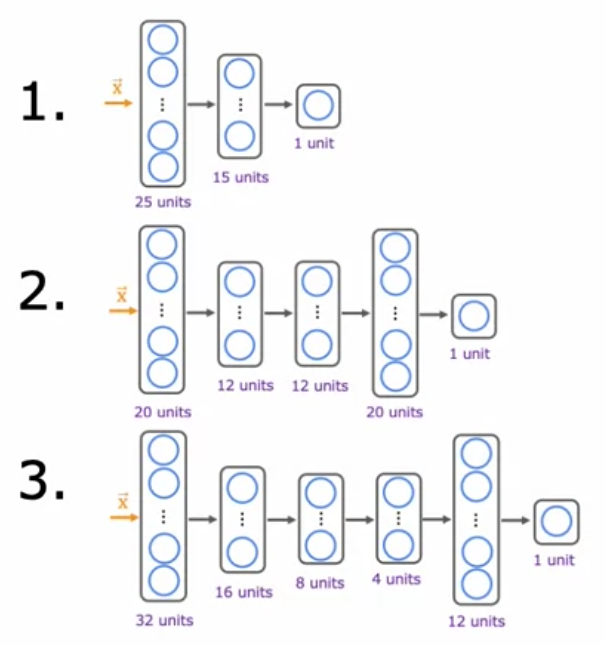

Đánh giá mô hình, bias & variance
Mô hình chạy chưa tốt. Nên thu thập thêm dữ liệu? Thêm đặc trưng? Tăng λ? Chọn sai hướng có thể tốn hàng tháng. Chương này dạy cách chẩn đoán trước khi chữa.
Chia dữ liệu: train / cross-validation / test
J_train thấp không nói lên điều gì — mô hình có thể đã thuộc lòng dữ liệu. Ta cần đánh giá trên dữ liệu mà mô hình chưa thấy.
| Tập | Tỉ lệ thường dùng | Dùng để |
|---|---|---|
| Training | 60% | Học tham số \(\mathbf{w}, b\) |
| Cross-validation (dev, validation) | 20% | Chọn mô hình: bậc đa thức, kiến trúc mạng, λ… |
| Test | 20% | Ước lượng khách quan hiệu năng cuối cùng — chỉ dùng một lần |
from sklearn.model_selection import train_test_split
# 60% train, 40% còn lại
x_train, x_, y_train, y_ = train_test_split(x, y, test_size=0.40, random_state=1)
# chia đôi phần còn lại: 20% cv, 20% test
x_cv, x_test, y_cv, y_test = train_test_split(x_, y_, test_size=0.50, random_state=1)
del x_, y_Nếu chọn bậc đa thức dựa trên tập test, thì bậc đa thức đã được “khớp” với tập test — J_test trở thành ước lượng lạc quan. Tập CV dùng để chọn; tập test giữ nguyên vẹn để báo cáo.
Thước đo lỗi
Hồi quy: MSE (không có regularization). Phân loại: tỉ lệ phân loại sai. Hai hàm mình viết trong Practice Lab:
def eval_mse(y, yhat):
m = len(y)
err = 0.0
for i in range(m):
err += (yhat[i] - y[i]) ** 2
err = err / (2 * m)
return err
def eval_cat_err(y, yhat):
m = len(y)
incorrect = 0
for i in range(m):
if yhat[i] != y[i]:
incorrect += 1
cerr = incorrect / m
return cerrChọn mô hình bằng tập CV
Lab01 huấn luyện hồi quy đa thức bậc 1 đến 10, mỗi bậc tính J_train và J_cv, rồi chọn bậc có J_cv nhỏ nhất. Cùng cách đó cho mạng nơ-ron: thử 3 kiến trúc với số lớp/nơ-ron khác nhau, chọn cái có lỗi CV thấp nhất.

from sklearn.preprocessing import PolynomialFeatures, StandardScaler
from sklearn.linear_model import LinearRegression
from sklearn.metrics import mean_squared_error
train_mses, cv_mses = [], []
for degree in range(1, 11):
poly = PolynomialFeatures(degree, include_bias=False)
X_train_m = poly.fit_transform(x_train)
scaler = StandardScaler()
X_train_m = scaler.fit_transform(X_train_m) # fit trên TRAIN
model = LinearRegression().fit(X_train_m, y_train)
train_mses.append(mean_squared_error(y_train, model.predict(X_train_m)) / 2)
X_cv_m = scaler.transform(poly.transform(x_cv)) # chỉ transform cho CV
cv_mses.append(mean_squared_error(y_cv, model.predict(X_cv_m)) / 2)
best_degree = np.argmin(cv_mses) + 1Chẩn đoán bias và variance

| Triệu chứng | Chẩn đoán |
|---|---|
| J_train cao, J_cv ≈ J_train | High bias (underfit) |
| J_train thấp, J_cv ≫ J_train | High variance (overfit) |
| J_train cao và J_cv ≫ J_train | Cả hai (hiếm, hay gặp với mạng nơ-ron) |
Mức hiệu năng cơ sở (baseline)
“Cao” là so với cái gì? Lab02 nhấn mạnh việc xác định baseline: hiệu năng của con người, của thuật toán đối thủ, hoặc ước lượng từ kinh nghiệm. Ví dụ nhận dạng giọng nói:
| Ví dụ A | Ví dụ B | |
|---|---|---|
| Baseline (con người) | 10.6% | 10.6% |
| J_train | 10.8% | 15.0% |
| J_cv | 14.8% | 15.5% |
| Chẩn đoán | Khoảng cách train–cv 4.0% → variance | Khoảng cách baseline–train 4.4% → bias |
Ở ví dụ A, J_train 10.8% trông có vẻ cao nhưng thật ra đã gần ngang con người (âm thanh nhiễu đến mức người cũng nghe nhầm).
Bảng “thuốc chữa”
| Sửa high bias | Sửa high variance |
|---|---|
| Thêm đặc trưng | Thêm dữ liệu huấn luyện |
| Thêm đặc trưng đa thức | Dùng ít đặc trưng hơn |
| Giảm λ | Tăng λ |
| Dùng mạng lớn hơn | (Mạng lớn + regularization tốt thường vẫn ổn) |
Mạng nơ-ron lớn là cỗ máy giảm bias: nếu J_train cao → làm mạng to hơn. Nếu J_cv cao → thêm dữ liệu. Một mạng lớn có regularization phù hợp hầu như không bao giờ tệ hơn mạng nhỏ — chỉ tốn tính toán hơn.
Chọn λ
Thử dãy λ = 0, 0.01, 0.02, 0.04, …, 10 (gấp đôi mỗi lần), huấn luyện mỗi giá trị, chọn λ có J_cv thấp nhất. Đồ thị J_cv theo λ là ảnh gương của đồ thị theo bậc đa thức: λ nhỏ → variance cao, λ lớn → bias cao.
Learning curve
Vẽ J_train và J_cv theo kích thước tập huấn luyện \(m\):
- High bias: hai đường nhanh chóng đi ngang ở mức cao, sát nhau. Thêm dữ liệu không giúp gì.
- High variance: khoảng cách lớn giữa hai đường, J_cv vẫn đang giảm. Thêm dữ liệu sẽ giúp.
Bài thực hành: mạng nơ-ron phân loại 6 lớp
Practice Lab so sánh ba mô hình trên dữ liệu 2 chiều có 6 cụm:
from tensorflow.keras import regularizers
# "Complex" — dễ overfit
model = Sequential([
Dense(120, activation='relu'),
Dense(40, activation='relu'),
Dense(6, activation='linear'),
], name="Complex")
# "Simple" — ít tham số
model_s = Sequential([
Dense(6, activation='relu'),
Dense(6, activation='linear'),
], name="Simple")
# "Regularized complex" — mạng lớn + L2
model_r = Sequential([
Dense(120, activation='relu', kernel_regularizer=regularizers.l2(0.1)),
Dense(40, activation='relu', kernel_regularizer=regularizers.l2(0.1)),
Dense(6, activation='linear'),
], name="RegularizedComplex")
for m_ in (model, model_s, model_r):
m_.compile(loss=SparseCategoricalCrossentropy(from_logits=True),
optimizer=Adam(learning_rate=0.01))Kết quả: mô hình Complex có lỗi train rất thấp nhưng lỗi CV cao hơn hẳn (overfit, ranh giới quyết định méo mó quanh từng điểm). Simple và Regularized cho lỗi CV tốt hơn; mô hình regularized cho ranh giới mượt nhất. Lab còn thử nhiều giá trị λ (0, 0.001, 0.01, 0.05, 0.1, 0.2, 0.3) để tìm giá trị tốt nhất.
Quy trình phát triển hệ thống ML
Phân tích lỗi (error analysis)
Lấy khoảng 100 ví dụ CV bị phân loại sai, xem thủ công và đếm theo nhóm (ví dụ bộ lọc spam: lừa đảo dược phẩm, cố tình viết sai chính tả, đánh cắp mật khẩu…). Tập trung vào nhóm chiếm tỉ lệ lớn nhất — đó là nơi cải thiện đáng công nhất.
Thêm dữ liệu
- Data augmentation: tạo ví dụ mới bằng cách biến đổi ví dụ cũ (xoay, phóng to, méo ảnh chữ; thêm tiếng ồn nền vào âm thanh). Biến đổi phải giống với nhiễu có trong dữ liệu thật.
- Data synthesis: tạo dữ liệu nhân tạo hoàn toàn (ví dụ render chữ bằng nhiều font để làm OCR).
- Data-centric AI: giữ nguyên mô hình, cải thiện chất lượng dữ liệu (sửa nhãn sai, bổ sung trường hợp khó).
Transfer learning
Mượn một mạng đã được huấn luyện trên tập dữ liệu khổng lồ (ví dụ 1 triệu ảnh ImageNet), thay lớp đầu ra, rồi:
- Chỉ huấn luyện lớp đầu ra mới (khi dữ liệu rất ít), hoặc
- Fine-tune toàn bộ mạng, khởi tạo từ trọng số đã học (khi có nhiều dữ liệu hơn).
Hoạt động được vì các lớp đầu học những đặc trưng chung (cạnh, góc, hình dạng) hữu ích cho nhiều bài toán. Đầu vào phải cùng loại (ảnh cho ảnh, âm thanh cho âm thanh).
Bộ dữ liệu lệch: precision & recall
Bài toán phát hiện bệnh hiếm (0.5% dân số): một “mô hình” luôn đoán y = 0 có độ chính xác 99.5%! Accuracy vô nghĩa ở đây. Dùng ma trận nhầm lẫn:
| Thực tế = 1 | Thực tế = 0 | |
|---|---|---|
| Dự đoán = 1 | True Positive (TP) | False Positive (FP) |
| Dự đoán = 0 | False Negative (FN) | True Negative (TN) |
- Precision: trong những ca mô hình báo “có bệnh”, bao nhiêu % thật sự có bệnh?
- Recall: trong những người thật sự có bệnh, mô hình phát hiện được bao nhiêu %?
- Tăng ngưỡng (ví dụ 0.7) → precision tăng, recall giảm; hạ ngưỡng (0.3) → ngược lại.
- F1 là trung bình điều hoà — bị kéo về phía giá trị nhỏ hơn, nên mô hình phải tốt cả hai mới có F1 cao. F1 được dùng để chọn ngưỡng ε trong phát hiện bất thường (chương 14).
- K-fold cross-validation: chia dữ liệu thành K phần, lần lượt dùng mỗi phần làm CV và K−1 phần còn lại để train, lấy trung bình. Đáng tin hơn một lần chia khi dữ liệu ít:
sklearn.model_selection.cross_val_score(model, X, y, cv=5). - ROC curve & AUC: vẽ True Positive Rate theo False Positive Rate ở mọi ngưỡng; AUC = 1 là hoàn hảo, 0.5 là đoán ngẫu nhiên. PR curve (precision–recall) hợp lý hơn khi dữ liệu rất lệch.
- Stratified split: giữ tỉ lệ lớp ở mọi tập —
train_test_split(..., stratify=y). - Hyperparameter search:
GridSearchCV,RandomizedSearchCV, hoặc Bayesian optimization (Optuna). - Double descent: với mạng nơ-ron cực lớn, J_cv có thể giảm lần nữa sau khi vượt qua điểm “thuộc lòng” — hiện tượng hiện đại mà đường cong chữ U cổ điển không giải thích được.
- C2W3 Lab01 — Model Evaluation and Selection
- C2W3 Lab02 — Diagnosing Bias and Variance
- C2_W3 Practice Lab — Advice for Applying Machine Learning (graded:
eval_mse,eval_cat_err, 3 mô hình)
Đi từng bước qua lab
- Lab01 — chia dữ liệu thành 60% train, 20% CV, 20% test bằng hai lần
train_test_split. - Mô hình tuyến tính cơ sở:
StandardScalerfit trên train →LinearRegression→ tính MSE/2 trên train và CV. - Thêm đặc trưng đa thức bậc 1 đến 10, mỗi bậc có scaler riêng; vẽ MSE train và CV theo bậc rồi chọn bậc có MSE CV nhỏ nhất.
- Mạng nơ-ron: so 3 kiến trúc (25-15-1, 20-12-12-20-1, 32-16-8-4-12-1), chọn kiến trúc có lỗi CV thấp nhất, rồi mới báo cáo lỗi test.
- Lab02 — chẩn đoán. Đặt baseline, rồi thử từng “thuốc”: thêm đặc trưng đa thức, giảm/tăng λ, bớt đặc trưng, thêm dữ liệu. Mỗi lần đối chiếu J_train và J_cv để xem đang sửa bias hay variance.
- Practice Lab: viết
eval_msevàeval_cat_err; thấy bậc 10 overfit; tìm bậc tối ưu; dò λ; dùng learning curve; cuối cùng so 3 mạng cho bài 6 lớp (Complex, Simple, Regularized).
Trong 1 triệu giao dịch chỉ có 1.000 gian lận (0.1%). Mô hình “luôn nói không gian lận” đạt accuracy 99.9% nhưng vô dụng. Đánh giá đúng cách:
| Thực tế gian lận | Thực tế bình thường | |
|---|---|---|
| Dự đoán gian lận | TP = 700 | FP = 300 |
| Dự đoán bình thường | FN = 300 | TN = 998.700 |
Precision = 700/1000 = 0.70 (cứ 10 lần chặn thẻ thì 3 lần làm phiền khách vô tội); Recall = 700/1000 = 0.70 (lọt 30% vụ gian lận); F1 = 0.70. Ngân hàng chọn ngưỡng theo chi phí thật: mỗi vụ lọt có thể mất hàng chục triệu, mỗi lần chặn nhầm chỉ tốn một cuộc gọi xác minh, nên thường ưu tiên recall.
from sklearn.metrics import precision_recall_curve
p, r, thr = precision_recall_curve(y_cv, proba_cv)
best = thr[(r[:-1] >= 0.9).nonzero()[0][-1]] # ngưỡng cao nhất còn giữ recall ≥ 90%Từ ghi chú Notion
Mô hình MNIST có và không có regularization. L2(0.01) nghĩa là λ = 0.01:
from tensorflow.keras.regularizers import L2
# không regularization
model = Sequential([
Dense(units=25, activation="relu"),
Dense(units=15, activation="relu"),
Dense(units=1, activation="sigmoid"),
])
# có regularization
model = Sequential([
Dense(units=25, activation="relu", kernel_regularizer=L2(0.01)),
Dense(units=15, activation="relu", kernel_regularizer=L2(0.01)),
Dense(units=1, activation="sigmoid", kernel_regularizer=L2(0.01)),
])- Data augmentation: áp dụng các phép biến đổi lên dữ liệu hiện có để tạo mẫu mới nhưng vẫn giữ nguyên ý nghĩa ban đầu. Cách làm phụ thuộc loại dữ liệu (ảnh, văn bản, âm thanh, số).
- Data synthesis: tạo dữ liệu nhân tạo từ tập gốc hoặc từ một mô hình thống kê mà không làm mất đặc điểm quan trọng của dữ liệu ban đầu.
- Transfer learning: tận dụng mô hình đã huấn luyện cho một bài toán để áp dụng vào bài toán khác có liên quan. Tải tham số đã huấn luyện trên tập lớn cùng loại đầu vào, rồi fine-tune trên dữ liệu của mình.
- Triển khai (deployment) cần kỹ năng phần mềm, tức MLOps: đảm bảo dự đoán ổn định và hiệu quả, mở rộng quy mô (scaling), ghi log, giám sát hệ thống, cập nhật mô hình.
Nguồn Notion: Advance Learning Algorithm
Ghi nhớ
- Train để học tham số, CV để chọn mô hình/siêu tham số, test để báo cáo.
- So J_train với baseline → bias; so J_cv với J_train → variance.
- Dữ liệu lệch: dùng precision, recall, F1 thay cho accuracy.
Tự kiểm tra
Baseline 1%, J_train 1.2%, J_cv 1.3%. Nên làm gì tiếp?
Mô hình đã rất tốt — cả bias (0.2%) lẫn variance (0.1%) đều nhỏ. Nếu cần cải thiện thêm, làm error analysis để tìm nhóm lỗi cụ thể.
Learning curve: J_train và J_cv đều ở ~20%, sát nhau, baseline 5%. Thêm dữ liệu có giúp không?
Không — đây là high bias. Cần mô hình mạnh hơn (thêm đặc trưng, mạng lớn hơn, giảm λ).
TP = 15, FP = 5, FN = 10. Tính precision, recall, F1.
P = 15/20 = 0.75; R = 15/25 = 0.6; F1 = 2·0.75·0.6/1.35 ≈ 0.667.